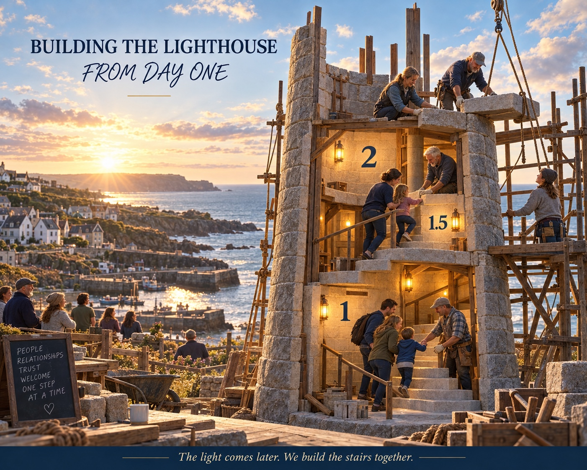
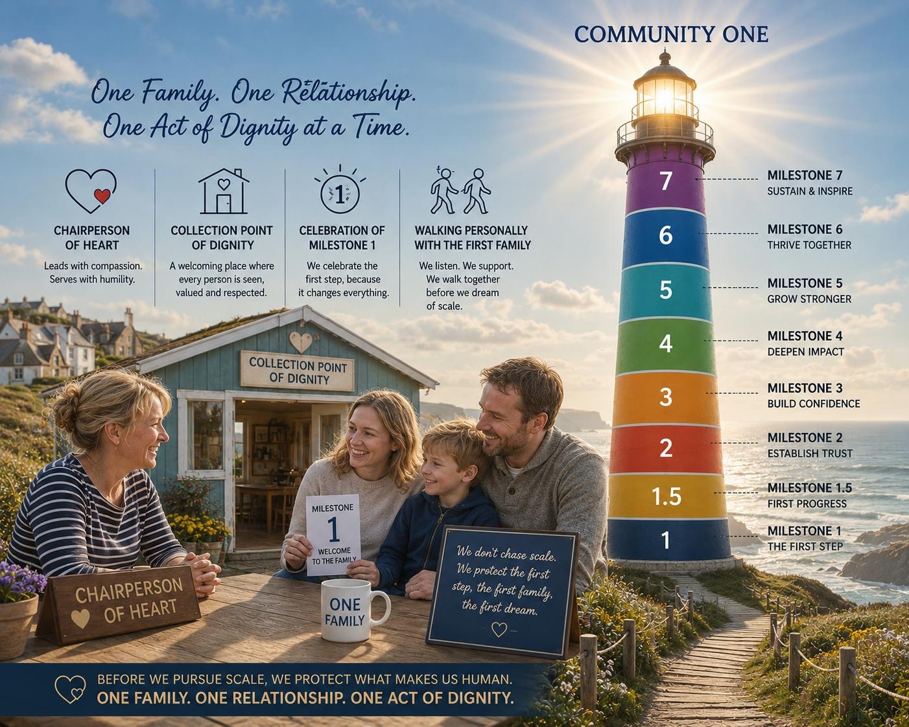

Help build what begins here
The Lighthouse Method
Small acts build the stairs inside. One day, a whole town may see the light.
Our horizon is 500 families. Our first responsibility is one.
The warning is already on the wall
St Austell’s loan shark mural gives a warning. It also leaves a question: where is the other way? An answer must become a place, people and a practical first step.
John Harris’s Money with Morals film brought together voices that make this human: Christina Stoneman on the weight of small lending decisions, Helen Bishop on costly borrowing and regained control, and James Dyer on the importance of a visible local outlet. Justin Welby’s public support for credit unions as an alternative to costly lending sharpened the intention. This St Austell effort is our own response to those prompts.
The first builders
We are gathering local supporters who can open doors, volunteers who could operate the Service Point, people who can help identify an appropriate first family, and guardians who will protect the purpose as the work grows.
One person can make an introduction. Another can help secure a place. Another can become an operator. Another can stand beside the first family. Each act can seem small while it is happening. Together they build the internal stairs.

One family is the first result
We want to begin carefully with one invited family. We will listen and help that family complete the first step. Kernow Credit Union will make its own decisions about its services and any applications.
Then we pause: what worked, what was unclear, and what must change before another family begins?
The milestones
These are ambitions, not achieved numbers. At each stage we count what actually happened, hear from families and operators, make corrections, and decide whether the next stage is ready. No next number without learning from the last one.

Our objective and evidence
The objective is to make a welcoming local route to the credit union real and repeatable. The measurable results are two volunteers ready to welcome the first family, that family's joining the credit union, and our progress through the next milestones with what we learn recorded. The milestone and pause method is our own application of objective and key-result thinking associated with John Doerr.
An invitation to act
If you can help find operators, make a local introduction, offer a suitable place, stand beside the first family, or safeguard the milestones, you could be one of the first builders.
Influences: The Guardian’s Money with Morals film and John Doerr’s explanation of OKRs. This framework and the St Austell milestones are Timothy Murphy’s synthesis; no endorsement by the people named is implied.